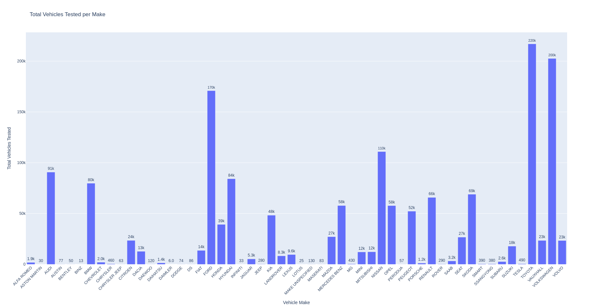
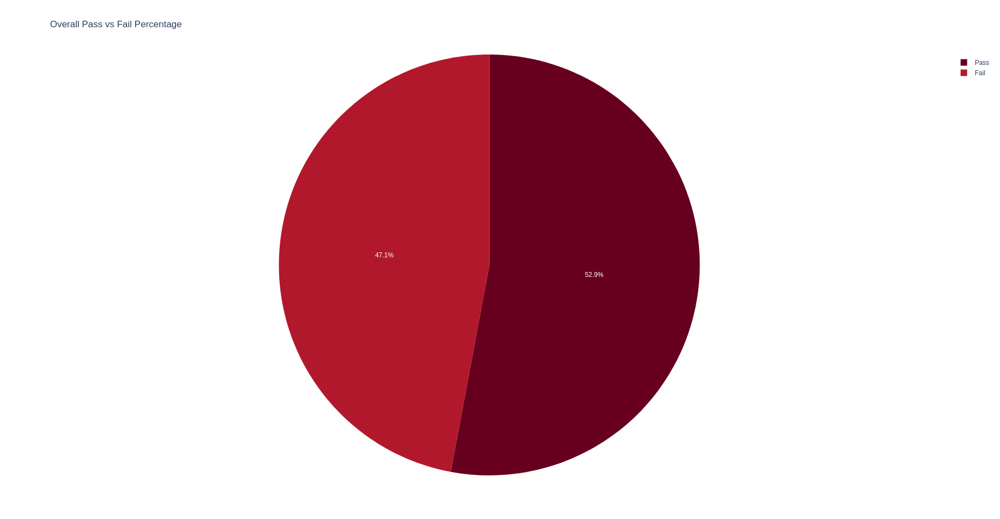

Basic Requirements 3.
A basic interactive information system interface
Running using the command - python -m http.server 8080
a. Develop a web-based interface to provide the public with information about your chosen dataset.
Description:
National Car Test (NCT) statistics such as annual pass or fail rates by test centre as well as vehicle make and model performance data. The NCT Annual Reviews are also available to download at https://www.rsa.ie/road-safety/statistics/nct-statistics-and-annual-reviews
b. Display the data visualisations you have created in the information system.
Graphs Here
 